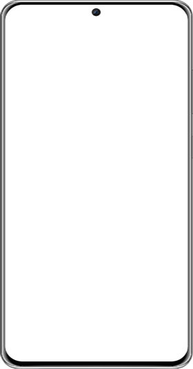
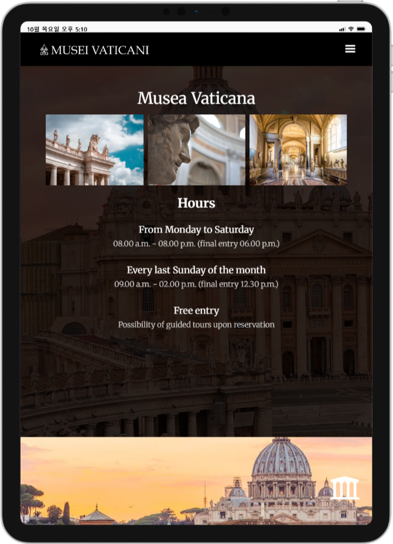
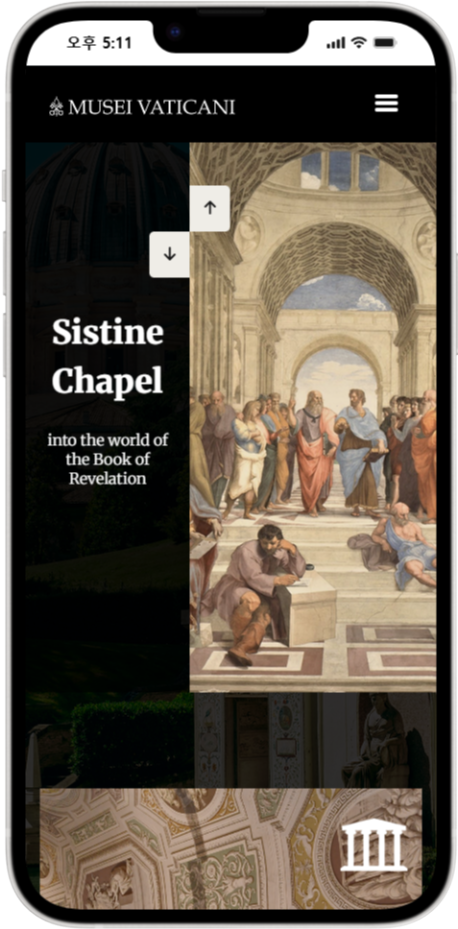

Portfolio
Web Publisher& Designer
Crafting clean interfaces with thoughtful code and purposeful design
Profile home
-
Lee Min Seon
- Info
- 이민선 / 2001.09.19
- Contact
- 010.4192.7132 / ms091910@gmail.com
-
- Skill
- HTML5 / CSS3 / JavaScript / jQuery / Bootstrap / 비동기처리 (AJAX, JSON) / Git / Github / Figma / Adobe Photoshop / Adobe Illustrator / Adobe Premiere Pro / Microsoft Excel / Microsoft Powerpoint / Microsoft Word
Web project

- 농협식품 Visite Site
-
- check_circle Html5 이전 방식으로 제작된 기존의 농협식품 기업 웹사이트 리뉴얼 프로젝트
- check_circle w3c validator 검사가 다양한 오류로 인해 실행 되지 않는 문제점
- check_circle 시멘틱 태그를 사용하여 SEO 최적화 및 Outline 재구성으로 웹 접근성과 웹 표준을 준수
- check_circle header와 nav영역을 한눈에 볼 수 있도록 jQuery를 사용해 Dropdown 기능 구현
- check_circle jQuery를 활용한 index Visual과 Tab 메뉴, scroll spy, Accodian, Gallery 기능 구현
- check_circle Ajax를 사용해 다양한 제품 정보를 객체 배열로 받아 click 이벤트에 적용
- 제작스킬 info
- HTML5, CSS3, JavaScript, jQuery, Figma Adobe Photoshop, illustrator, W3C 웹표준 통합 마크업 검사 (html/css), 웹접근성검사(K-WAH), 크로스브라우징 완료
- 색상 / 폰트
-
- main color
- point color1
- point color2
- / Noto San Serif, Roboto
- 제작기간
- 약 1개월
- 제작인원
- 1인 기여도 (100%)
Mobile project

- 농협식품 Mobile Visite Site
-
- check_circle 리뉴얼한 기업형 PC버전을 모바일 환경에 적합한 UI로 새롭게 구현한 모바일 웹사이트
- check_circle 모바일 환경에 맞춰 터치 이벤트를 중점적으로 구성하고, 2단 이하의 레이아웃을 사용
- check_circle Media Query와 JavaScript를 활용하여 해상도별 이미지 최적화
- check_circle gnb 영역에 햄버거 메뉴를 배치하고 아코디언 기능을 적용
- check_circle swiper 슬라이더 플러그인 적용
- 제작스킬 info
- HTML5, CSS3, JavaScript, jQuery, Figma Adobe Photoshop, illustrator, W3C 웹표준 통합 마크업 검사 (html/css), 웹접근성검사(K-WAH), 크로스브라우징 완료
- 색상 / 폰트
-
- main color
- point color1
- point color2
- / Noto San Serif, Roboto
- 제작기간
- 약 3주
- 제작인원
- 1인 기여도 (100%)
responsive project



- Vatican Museums Visite Site
-
- check_circle Media Query를 활용해 디바이스별 해상도에 최적화된 UI를 설계
- check_circle 해상도에 따른 header UI 변경 (1024px 이하 해상도 햄버거 메뉴 적용)
- check_circle Flex와 Grid를 사용하여 다양한 레이아웃 적용
- check_circle Magnific Popup 플러그인으로 페이지 내 팝업 형태로 영상이 재생되도록 구현
- check_circle Javascript / jQuery를 활용한 동적 효과 구현 (탭 메뉴, 스와이프, 아코디언 등)
- check_circle 반응형 비디오 재생을 고려하여 Video.js 라이브러리를 활용
- 제작스킬 info
- HTML5, CSS3, JavaScript, jQuery, Figma Adobe Photoshop, illustrator, W3C 웹표준 통합 마크업 검사 (html/css), 웹접근성검사(K-WAH), 크로스브라우징 완료
- 색상 / 폰트
-
- main color
- point color1
- point color2
- / Merriweather, Open Sans
- 제작기간
- 약 2주
- 제작인원
- 1인 기여도 (100%)